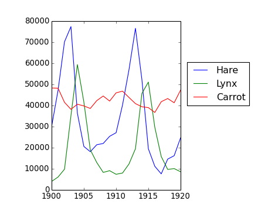
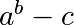
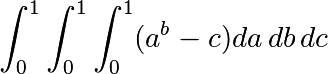
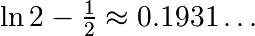
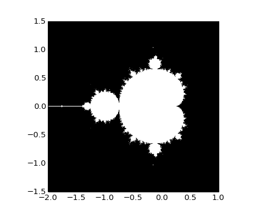

y genere un nuevo arreglo que contenga la segunda y cuarta fila.
>>> a = np.arange(25).reshape(5, 5)
elemento a elemento con el arreglo b = np.array([1., 5, 10, 15, 20]).(Sugerencia: np.newaxis).
Vamos a hacer algunas manipulaciones de arreglos numpy comenzando con la famosa imagen de Lena (http://www.cs.cmu.edu/~chuck/lennapg/). scipy proporciona una matriz 2D de esta imagen con la función scipy.lena:
>>> from scipy import misc
>>> lena = misc.lena()
Nota: En versiones anteriores de scipy, usar scipy.lena()
Aquí están algunas imágenes que podemos obtener: utilizando diferentes mapas de color, recortamdo la imagen, cambiando algunas partes de la imagen.
In [3]: import pylab as plt In [4]: lena = misc.lena() In [5]: plt.imshow(lena)
In [6]: plt.imshow(lena, cmap=plt.cm.gray)
In [9]: crop_lena = lena[30:-30,30:-30]
In [15]: y, x = np.ogrid[0:512,0:512] # x and y indices of pixels In [16]: y.shape, x.shape Out[16]: ((512, 1), (1, 512)) In [17]: centerx, centery = (256, 256) # center of the image In [18]: mask = ((y - centery)**2 + (x - centerx)**2) > 230**2 # circle
a continuación, se le asigna el valor 0 a los píxeles de la imagen que corresponde a la máscara. La sintaxis es muy sencilla e intuitiva:
In [19]: lena[mask] = 0 In [20]: plt.imshow(lena) Out[20]: <matplotlib.image.AxesImage object at 0xa36534c>
Cambie el círculo por un elipse.
Los datos en populations.txt describe las poblaciones de liebres y linces (y zanahorias ) en el norte de Canadá durante 20 años:
>>> data = np.loadtxt('data/populations.txt')
>>> year, hares, lynxes, carrots = data.T # trick: columns to variables
>>> plt.axes([0.2, 0.1, 0.5, 0.8])
<matplotlib.axes.Axes object at ...> >>> plt.plot(year, hares, year, lynxes, year, carrots) # doctest: +ELLIPSIS [<matplotlib.lines.Line2D object at ...>, ...] >>> plt.legend((‘Hare’, ‘Lynx’, ‘Carrot’), loc=(1.05, 0.5)) # doctest: +ELLIPSIS <matplotlib.legend.Legend object at ...>
[source code, hires.png, pdf]
Calcule e imprima, basado en los datos en populations.txt...
... todo sin bucles for.
Solución: Python source file
Escriba una función f(a, b, c) que devuelva . Construya un arreglo 24x12x6 que contenga valores en los rangos de [0,1] x [0,1] x [0,1].
Aproximar la integral 3-d

sobre este volumen con la media. El resultado exacto es:  — cuál es su error relativo?
(Sugerencia: use las operaciones elemento a elemento y broadcasting. Usted puede usar np.ogrid para obtener una serie de puntos en determinado rango con np.ogrid[0:1:20j].)
Recuerde las funciones en Python:
Solución: Python source file
[source code, hires.png, pdf]
Escribir un script que calcula el fractal de Mandelbrot. Iteración Mandelbrot:
N_max = 50 some_threshold = 50
c = x + 1j*y
El punto (x, y) pertenece al conjunto de Mandelbrot si :math: |c| < some_threshold.
Para el cálculo de:
>>> import matplotlib.pyplot as plt
>>> plt.imshow(mask.T, extent=[-2, 1, -1.5, 1.5])
<matplotlib.image.AxesImage object at ...>
>>> plt.gray()
>>> plt.savefig('mandelbrot.png')
Solution: Python source file

Matriz de transición P cadena de Markov, y la distribución de probabilidad de p estados:
Escribir un script que funciona con 5 estados, y:
Recuerda normalizar el vector propio — Yo no ...
Caja de herramientas: np.random.rand, .dot(), np.linalg.eig, reductions, abs(), argmin, comparaciones, all, np.linalg.norm, etc.
Solution: Python source file

{kind=link}
{kind=link}